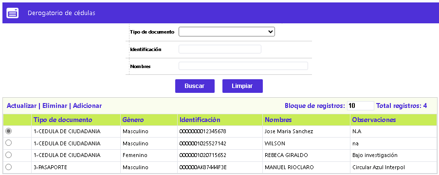
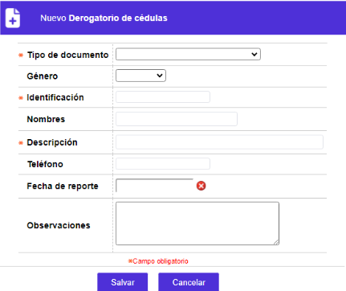
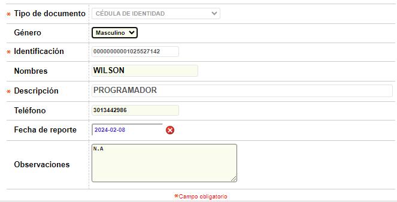

|
Derogatorio de cédulas |
A través de este formulario se habilita la consulta y mantenimiento de la tabla que contiene la relación de todos los documentos y nombres de sus titulares que por diversos motivos son considerados clientes no deseables para la corporación. Mediante el campo género se valida por rangos el número del documento, puesto que para algunas zonas geográficas existe una relación directa entre ambos. En la opción Parámetros de solicitudes la entidad puede determinar la manera como utilizará la información ingresada en este formulario. Adicionalmente cuenta con un filtro de búsqueda por Tipo documento, Identificación y Nombres.

El formulario contiene las opciones Actualizar, Eliminar y Adicionar
Adicionar: Si el usuario invoca la opción Adicionar se despliega un nuevo formulario.

Descripción de campos
|
Tipo de documento |
Campo obligatorio tipo combo del cual se selecciona el tipo de documento de identificación correspondiente al cliente que se desea ingresar en derogatorio. |
|
Genero |
Este campo tipo combo permite seleccionar entre Femenino y Masculino el sexo o género del cliente ingresado a derogatorio |
|
Identificación |
Campo obligatorio de hasta 16 posiciones en el cual se ingresa el número del documento de identificación del cliente en derogatorio |
|
Nombres |
En este campo de hasta 60 posiciones se registra el nombre del cliente a quien pertenece el tipo y número de identificación ingresado en los campos anteriores. |
|
Dirección |
En este campo de hasta 60 posiciones se registra el nombre del cliente a quien pertenece el tipo y número de identificación ingresado en los campos anteriores. |
|
Fecha de reporte |
Campo en el que se registra en formato yyyy-mm-dd la fecha en la cual se hizo el reporte o inclusión del cliente en el derogatorio. |
|
Observaciones |
En este campo alfanumérico la entidad puede registrar el motivo o las razones por las que el cliente es reportado en el derogatorio. |
Actualizar: Si el usuario selecciona un registro e invoca la opción Actualizar se despliega un formulario en el cual los campos modificables son Género, Identificacion, Nombres, Fecha de reporte y Observaciones.
